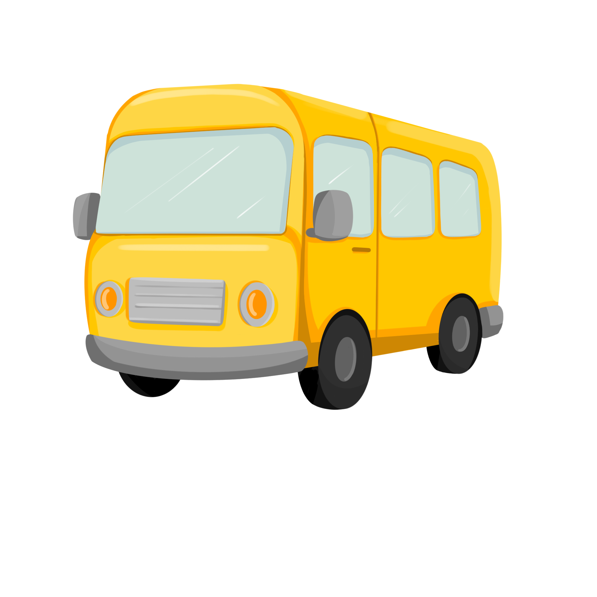

Aim: by the end, the ss have introduced themselves, named and listed the members of Star family; exposed to L2, follow instructions.
Language: How old are you?; My name is..; bus; star · Instructions: circle; tick; cross
MATERIALS
⚠ The конспект's MATERIALS line also lists "a cake with candles" — but Lesson 1's procedure never calls for it. Checked against Unit 1.pdf: the cake, the candles, the "How old are you?" song and the "How old are you?" worksheet all belong to Lesson 3, not this one — looks like they got copied into Lesson 1's materials line and the Lesson 1 folder by mistake. Not used below. Also sitting in the Lesson 1 folder: a 67-minute videoplayback.mp4 — far too long to be this lesson's content and nothing in the конспект points to it, so it's left out too. Flagging both rather than guessing wrong.
Sit down and greet the ss. Shake hands and introduce yourself: "Hello my friends! My name is ___." Ask: "What's your name?" Elicit the names. Say: "Nice to meet you, [name]!"
🎬 SONG — "What's your name?" (Super Simple Songs)
Конспект links the rutube copy; this is the same song, the local file already in the Lesson 1 folder.
Hand out pre-cut circles / paper plates, write ss' names on them. Guide them to draw faces: "Let's draw our faces. Draw 2 eyes, one nose, one mouth." "Look at my plate. Draw 2 eyes. Great job!"
Help the ss, don't teach the words — just give instructions. Goal: exposure to L2 + following instructions.
🚌 FLASHCARD — the yellow bus

Stick the bus flashcard on the board. Ask: "What do you see?" (point to your eyes). Say: "It's a bus." Repeat: "A bus, a yellow bus. Let's go on a bus ride."
Encourage the ss to stick their plates on the board around the bus. Ask: "Who's going on a bus ride?" TPR — ride the bus.
Point to each plate — the ss shout out the names.
Kid's Box characters flashcards
Stick the Star family flashcards on the board face down. Turn each one, point and say the name.
Elicit the name from the ss, so they repeat.
Repeat all the characters again. Ask: "Close your eyes and turn around" (demonstrate). Hide one card. "Open your eyes and turn around." Ask: "What's missing?"
The ss guess and shout out the name. Play again — repeat for every member of Star family.
You can hand the teacher role to a confident volunteer: they hide a card and you teach them "Close your eyes. Open your eyes." for the rest to follow.
"What do you see?" Point to your eyes, say "see." Elicit the Star family names — point and say each one. "This is Star family" — teach Star, find a star in the picture.
Teach "Listen and point" (TPR both). Hold your book, point to the pictures on p.4. ICQs: "Do you point to me? Do you point to Stella? Do you point to Simon?"
Play the recording, monitor as ss listen and point. Play the first line, pause, demonstrate. Then ask one by one: "Point to Simon", "Point to Suzy", etc. — slowly, so they feel confident.
The конспект says "play the recording" without a track number — pull it from the PB1 class audio for Unit 1 on your iPad.
Stick the flashcards around the class. Ss stand up in pairs. Student A: "Point to Suzy." Student B points. Swap roles.
Demonstrate first in an open pair — invite one student, say "Point to Stella," and get them to ask a partner in turn.
Elicit the names again. Point to each character: "What's his/her name? Is she Suzy? Is she Stella?" Ss work in pairs.
Teach the instruction match by drawing a correct line on the board. Repeat "match" several times with the ss.
Draw a tick and a cross on the board. Say "My name is Suzy." Elicit yes/no — thumbs up/down. Circle the correct answer (cross).
Say "My name is ___." Elicit "yes," circle tick. Elicit tick = yes, cross = no.
Teach the instruction circle — a volunteer circles tick or cross. "Circle tick." Full instruction: "Look, listen and circle tick or cross." ICQ: "Do you circle tick if yes?"
Play the CD with pauses. Ss check answers in pairs: "Compare the answers." Translate "compare" into L1 if necessary.
Track not numbered in the конспект — same AB p.4 audio.
masks / puppets
Ss stand up (puppets/masks ready beforehand). Invite them to introduce their characters: "Hello! My name's Suzy!" Drill the rhythm together — try different voices to keep it fun.
Invite the ss to introduce the plates they made at the start of the lesson. Give the example: "Hello! My name's Jane!" Elicit the name from them.
Make a circle and start the game: "Hello! My name is Jane. What's your name?" Throw the ball to a kid. That kid says their name and asks another one.
Ask the ss to draw a smile — how much they liked the lesson (one smile, two smiles, etc.).
Game on Word Wall: the ss spin the wheel and name / remember the characters.
Open the Wordwall game →